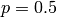
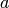
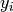
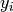
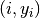
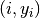
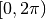
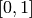
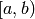

CREATE STREAM FROM SLIDING WINDOW¶
Syntax:
CREATE STREAM stream_name FROM SLIDING WINDOW
(SIZE window_length ADVANCE step_size { TIME | TUPLES })
OVER input_stream WITH agg_fun(params) [ AS alias ] [, ... ]
[ WHERE pre_filter ] [ HAVING post_filter ]
Examples:
jubaql> CREATE STREAM tokugawa FROM SLIDING WINDOW
(SIZE 4 ADVANCE 2 TUPLES)
OVER ds WITH maxval(label) AS era
HAVING era = 'tokugawa'
CREATE STREAM
jubaql> CREATE STREAM sitstream FROM SLIDING WINDOW
(SIZE 10 ADVANCE 2 TIME)
OVER input WITH stddev(dx), quantile(0.3, v)
WHERE activity = 'sitting'
CREATE STREAM
Explanation¶
CREATE STREAM FROM SLIDING WINDOW creates a stream with aggregate values computed from sliding windows over a given input stream. One item in the created output stream corresponds to one window over the input stream.
stream_nameis a user-defined string that will identify this stream later on.window_lengthis an integer that defines how many items will go in one window, either as an absolute number (in count-based mode) or as the maximal temporal distance in seconds between first and last element of a window (in timestamp-based mode).step_sizeis an integer that defines the distance between the start points of two subsequent windows, either as an absolute number (in count-based mode) or as the temporal distance in seconds between the respective start times of two windows (in timestamp-based mode).- The
TIMEandTUPLESkeywords determine the mode of the window stream. In both modes, the output stream will contain one item per window, with the columns holding the aggregate function values of all items in the respective window.TUPLESactivates count-based mode, i.e., every window will have the exact same number of items, and the firststep_sizeitems of a window will not appear in the next window.TIMEactivates timestamp-based mode. The input stream needs to have a column with the namejubaql_timestampwith a string timestamp in ISO 8601 format (optionally including milli-/micro-/nanosecond precision, but without timezone information). The items in the input stream are expected to be in order of their embedded timestamps. Then every window will contain all items in the range [x, x+window_length), where x increases by step_size from one window to the next. The output stream will also have a column calledjubaql_timestampcontaining the value x in each item. Note that – as opposed to the count-based version – it is totally possible to have windows with varying number of items in them, including empty windows. (There will be no item in the output stream for an empty window.)
input_streamis the stream to use as input. The data source that this stream is derived from must not yet be in process (or done with processing) when the statement is issued.agg_funis the name of an aggregate function to use.paramsis the list of input parameters for that function, where the last parameter is always the value/column/expression to aggregate over, the parameters before depend on the aggregate function and control that function’s behavior. See the next subsection for a list of available functions and the required/optional parameters.aliasis the name of the column to hold the aggregated value. If it is not given,agg_funwill be used. Theagg_fun(params) [ AS alias ]clause can be used multiple times to aggregate over different columns of the input stream.pre_filteris a filter expression just like the ones that can be used in aWHEREclause of a Spark SQLSELECTstatement. If given, only the items in the input stream matching that condition will be used for window computation. This means that a count-based stream with window length 10 will still always have 10 items in each window, even if thepre_filterdrops half of the items in the input stream.post_filteris a filter expression just like the ones that can be used in aWHEREclause of a Spark SQLSELECTstatement. If given, only aggregate value items that match this condition will be emitted into the output stream. Note that here the column names of the output stream (i.e., either the givenaliasoragg_fun) must be used.
After a CREATE STREAM FROM SELECT statement has been processed successfully, the user can use the specified stream_name in other statements.
Available Aggregate Functions¶
The following aggregate functions can be used in the WITH agg_fun(expression) AS alias clause of a CREATE STREAM FROM SLIDING WINDOW statement.
All but the last parameter (which mentions the input column/expression to aggregate over) must be computable at the time when the statement is issued, i.e., cannot reference any stream columns.
Functions on Numeric Input Values¶
- Average/Mean:
avg(_): Double- Returns: The arithmetic mean value of all input values.
- Standard Deviation:
stddev(_): Double- Returns: The standard deviation of all input values, 0.0 if there is just one input value.
- Quantile:
quantile(p: Double, _): Double- Returns: The p-quantile of all input values. In case of ambiguity (e.g., the median of
[0.0, 1.0, 2.0, 3.0]), the larger value is returned. - Parameters:
p: standard quantile parameter ( is the median)
- Alternative forms:
quantile(expr)equalsquantile(0.5, expr)
- Returns: The p-quantile of all input values. In case of ambiguity (e.g., the median of
- Linear approximation:
linapprox(_): Map[String, Double]- Returns: A map with keys
"a"for the slope  and"b"for the axis intercept of the best linear approximation to the input values. The value  at the
of the best linear approximation to the input values. The value  at the  -th position ( counting from 0) is interpreted as a data point  for the linear approximation. Both and are
-th position ( counting from 0) is interpreted as a data point  for the linear approximation. Both and are NaNif there is just one input value.
- Returns: A map with keys
- Fourier coefficients:
fourier(_): Map[String, Array[Double]]- Returns: A map with keys
"re"and"im"for the real and imaginary parts of the Fourier coefficients of a function represented by the input values. The number of values should be a power of 2 (or zeros will be added) and they are interpreted as the values of a function at equidistant positions in the interval . The coefficients are computed using the methodFastFourierTransformer.transformInPlace(data, DftNormalization.STANDARD, TransformType.INVERSE)from Apache Commons Math.
- Returns: A map with keys
- Wavelet coefficients:
wavelet(_): Array[Double]- Returns the Haar wavelets coefficients of a function represented by the input values. The number of values should be a power of 2 (or zeros will be added) and they are interpreted as the values of a function at equidistant positions in the interval .
- Histogram:
histogram(lowestUpperBound: Double, highestLowerBound: Double, numBins: Int, _): Array[Double]- Returns: An array of doubles in the range with the -th number describing the fraction of items in the -th bin. Note that each bin describes a half-closed interval .
- Parameters:
lowestUpperBound: upper bound of the lowest binhighestLowerBound: lower bound of the highest binnumBins: number of bins
- Alternative forms:
histogram(lowestUpperBound, highestLowerBound, expr)equalshistogram(lowestUpperBound, highestLowerBound, 10, expr)histogram(numBins, expr)equalshistogram(0.1, 0.9, numBins, expr)histogram(expr)equalshistogram(0.1, 0.9, 10, expr)
- Returns: An array of doubles in the range with the
Functions on String Input Values¶
- Concatenation:
concat(separator: String, _): String- Returns: The concatenation of all input values, separated by the given string.
- Parameters:
separator: will be inserted between two subsequent input values
- Alternative forms:
concat(expr)equalsconcat(" ", expr)
- Most frequent element:
maxelem(_): String- Returns: The most frequent of all items. If there are two equally frequent items, the one that appeared last will be returned.
Notes¶
- As opposed to all other processing statements,
CREATE STREAM FROM SLIDING WINDOWSis the only one that cannot be implemented in an embarrassingly parallel manner. The reason is that if there is an overlap between two windows, then the items in that overlap must be known to the workers processing these two windows. If these workers are on different machines, then the items in the overlap must be shipped over the network (“shuffle” in Hadoop terms), i.e., there is a limit to scaling out. - Also, as opposed to all other processing statements,
CREATE STREAM FROM SLIDING WINDOWSis stateful across batch borders in a DStream. The reason is that we must keep track of “partial” windows, i.e., windows that are (maybe) not yet complete and where we will (maybe) receive further data in the next batch. This statefulness requires the use ofupdateStateByKey()in Spark Streaming which involves writing state to disk.